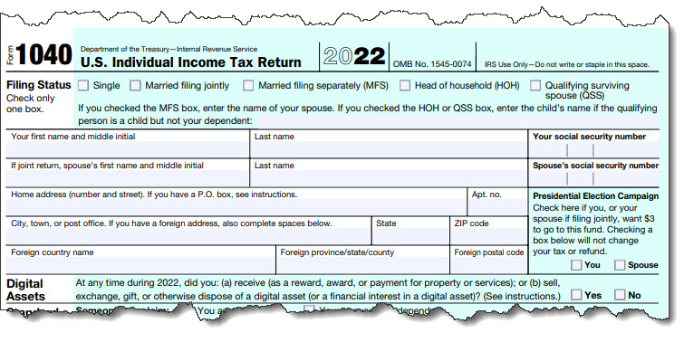

The short answer is no. Fewer than 1% of taxpayers get audited. But you should prepare for taxes like you’re going to be.
If you break out in a sweat when you think about the possibility of an IRS audit, you’re not alone. It’s a common source of anxiety. But your chances are slim in any given year. For FY22, 38 out of every 1,000 (0.38%) taxpayers were audited, according to the Transactional Records Access Clearinghouse (TRAC), an independent data research and distribution organization that operates out of Syracuse University.
And you may not even be in a high-risk group. TRAC recently reported that the taxpayers most likely to be audited made over $1 million annually. The second most likely group consisted of taxpayers making less than $25,000 per year who claimed the Earned Income Tax Credit (EITC).
Of course, that’s small comfort if you’re one of the unlucky few. But there are steps you can take to be prepared in case you’re selected.
Audit “Red Flags”
The best thing you can do to be ready if the IRS chooses you for an audit (and maybe even avoid one), experts say, is to prepare an absolutely accurate return. Some audits are totally random, and they can’t be predicted. But make sure your calculations are correct. Report everything that’s come in on forms like the W-2 and 1099s. Get your Social Security number right, and sign your return.
You’d be surprised at how many people get basic details wrong on their tax returns. Don’t be one of them.
You may have heard about audit “red flags,” areas of the Form 1040 and its related forms and schedules that the IRS scrutinizes more closely than others. Though the IRS doesn’t spell these out, it does compare returns to national “norms,” returns that share similar characteristics, to see if your numbers seem suspect. But no one knows what goes into the agency’s computer algorithms. It’s a closely guarded secret.
Still, there are some tax topics that seem to attract the IRS’s attention, based on returns that have been audited. So pay special attention and make sure you have all of your receipts if your return includes:
You should be claiming all of your legitimate business expenses. Document travel and meals very carefully, though.
Types of Audits
There are actually three types of IRS audits. One involves an adjustment letter. The agency may send you one of these if, for example, you neglected to include a small amount of income or interest that was reported to it on a form. The IRS will make the adjustment for you and notify you that it was done.
A correspondence audit is more complicated and more serious. You’ll have been chosen for one of these if the IRS sends you a letter requesting more information about your income, expenses, and deductions. You don’t have to meet with an agent for this kind of audit, just provide whatever they request.
It’s the in-person audit that people dread. This can take place in an IRS office (an office audit) or at your accountant’s office, place of business, or home (a field audit). You’ll be given a list in advance of what the agent will want to see. Some electronic records are acceptable, though you may just be bringing in file folders or large envelopes filled with receipts and other papers. Be as organized as possible, to minimize the time required for the audit.
A Smart Practice
Even if you’re never selected for an audit, maintaining your tax-related financial information as if you were going to be tapped for further examination is something we recommend you do. It will make your tax preparation chores much easier. Keep your records for at least three years, though the IRS can go back as far as six years if your taxes are complicated or other factors are present.
You’ve probably filed your 2022 taxes by now, but keep in mind that we’re available to help you make financial decisions throughout the year that will affect your taxes. We can also take on your 2023 tax preparation itself when the time comes. We’re available to help you with all thing tax.